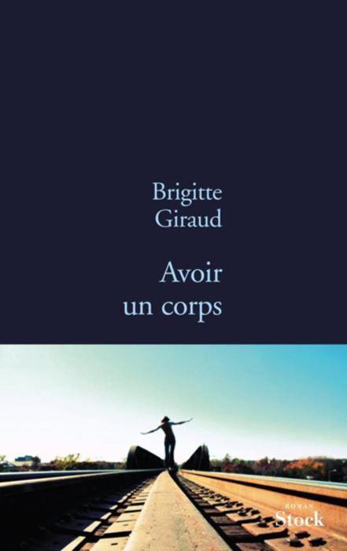
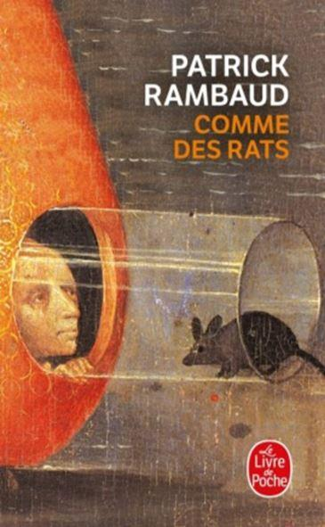
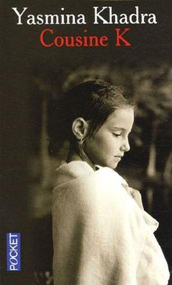
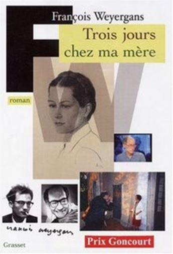

Voici venir l’été, la saison des grandes chaleurs où l’on préfère se vêtir court et léger. On se décontracte dans la vie quotidienne, on allège ses bagages, son sac à main ou la sacoche de tous les jours. C’est la saison ou, en lecture il vaut mieux privilégier de petits livres rafraîchissants et vite lus plutôt que de s’encombrer de gros volumes demandant de l’attention.
J’ai choisi pour vous sept petits ouvrages distrayants, certes pas de la dernière mouture – il y a même dans le lot le prix Goncourt 2005- tous ces livres sont aujourd’hui quasiment sortis en poche.
Avoir un corps
Une femme écrivant sur son corps en 2013, on se dit tout de suite « soit c’est un livre féministe, soit c’est de la pleurnicherie moderne ! » Ce n’est pas le cas avec Avoir un corps, de Brigitte Giraud, éd. Stock. Ce livre est tout simplement le livre d’une femme qui parle de son corps, de son rapport avec lui. Quand j’écris simplement, ça signifie qu’elle en parle de façon simple, sans les grands mots des psyministes, sans revendication particulière.
L’auteur est une fille, c’est différent des garçons et elle sait le dire dans une écriture maîtrisée. Les 235 pages sont pudiques sans être réservées, elles montrent sans exhiber. Une véritable tranche de vie faite de pain dur et noir avec la douceur du miel sur le dessus :
« La blouse de nylon bleu clair est obligatoire, alors que les filles des bureaux portent leurs vêtements de ville, bottes et jupes serrées le plus souvent.
Les filles des bureaux traversent la coursive au–dessus de nos têtes et je sens comme ma blouse me soumet. » (p.110)
De belles formules aussi en de courtes phrases :
« Je dois éconduire la migraine qui me gagne. » (p.116)
« Je préfère ne rien voir, rester dans le flou, et la nuit qui tombe tôt n’est pas une punition. » (p.215)
L’humour n’est pas absent de cette écriture simple et sincère :
« Ma mère dit qu’il y a une princesse enfermée dans la tour, une princesse avec une longue robe pailletée, il faudrait la libérer. Je n’ai pas prévu de princesse sur mon chantier, qu’on la zigouille. » (p.13)
Le titre parle du corps, mais l’âme poignante, qui griffe et accroche plus qu’elle ne saisit, n’est pas absente de cette biographie discrète qui attire le lecteur comme un corps tendre qu’on a envie d'enlacer, de caresser. Entre l’auteur et le lecteur se trame une osmose, de celles qui sont d'un accord parfait.
Les belles endormies
Curieux, original et exotique l'ouvrage de Yasunari Kawabata « Les belles endormies » éd. Le livre de poche. Un homme de 60 ans, Eguchi, se rend à plusieurs reprises dans une maison de plaisir. Jusque-là c'est banal au Japon. Mais les geishas qu'il rencontre ont une particularité : elles dorment. C'est afin qu’ils dorment avec de belles jeunes filles que cette maison de plaisirs propose ses services aux messieurs. L'écriture est travaillée, les souvenirs du vieil homme agréables et la longueur du roman justement mesurée. À lire un soir où l'envie d'exotisme vous prend.
Comme des rats
Certes nous ne sommes pas dans le grand style ni dans la grande littérature avec Comme des rats, de Patrick Rambaud, éd. Le livre de poche. Mais l'idée est originale : écrire un roman dont les héros sont des rats. Rude vie que celle d'un rat, on suit le héros dans sa vie quotidienne : du déménagement des Halles de la Villette aux nouvelles Halles de Rungis. Et la vie du héros est une quête quotidienne et ordinaire de femelles et de nourriture, de caves en caves, de canalisations en canalisations. On y apprend la finesse du rat pour se faufiler partout et surtout là où on ne l'attend pas : chez vous !
On découvre, en partageant son quotidien, que nos dictons sont faux et on finit par penser que l'homme est un rat pour l'homme.
Un bon moment à passer mais mieux vaut ne pas lire l'ouvrage après avoir abusé de boissons alcoolisées ou avant de faire « zapoï » : la crise de délirium pourrait surgir et vous inciter à regarder sous le lit. Même si les égouts et les odeurs ne se discutent pas.... on est bien content que le livre ne soit pas en trois D...
La controverse de Valladolid
Un grand livre que La Controverse de Valladolid par Jean-Claude Carrière, éd. Le pré aux clercs, (en Pocket.) La célèbre dispute théologique n’est pas retranscrite pièce par pièce ce qui serait ennuyeux, mais sous forme de roman. L’écriture n’est pas précieuse, mais agréable.
Cette dispute opposa l’évêque Bartolomé de Las Casas au théologien philosophe Ginès de Sépùlveda. Cela se passa en 1550 en Espagne. Le but de cette dispute arbitrée par le Légat du Pape est d’une importance capitale : déterminer si les indiens du nouveau monde ont une âme et descendent bien d’Adam et Ève, pas moins !
Bien évidemment il ne faut pas lire l’ouvrage avec un regard et un esprit du vingt et unième siècle, sans quoi on perd toute la finesse et la subtilité des échanges, on passe complètement à côté de la virtuosité de Sépùlveda. Ce dernier perdra d’ailleurs la dispute. Mais ce ne sont pas les arguments humanistes, charitables et répétitifs de Las Casas qui convaincront le Légat. Ce dernier, s’il ne l’avait déjà, s’est fait sa propre opinion par des moyens curieux que notre siècle trouverait barbares. Décision courageuse, car comme en chaque époque, l’argent, les intérêts et les pressions sont là et il faut faire avec. La décision du Cardinal changera la face du monde.
Cousine K
(PRIX DE LA SOCIÉTÉ DES GENS DE LETTRES)
Plutôt que de parler de court roman on parlera d’une nouvelle pour l’ouvrage de Yasmina Khadra, Cousine K, (107 pages), éd. Julliard (Pocket.) Petit par le format, mais pas par le contenu ! Le livre est séparé en courts chapitres de 2 ou 3 pages. Chaque « chapitre » est rempli d’une écriture dense et mûrie. Cela commence dès l’introduction :
« Entre cousine K et moi, c’était ce combat-là qui se menait. Le bien mal fait ; le mal bien fait. » p.10
La poésie est présente tout au long de l’ouvrage et ne s’égare jamais dans la facilité, chaque phrase est pensée, soupesée, avant d’être couchée définitivement sur le papier :
« Le temps passe et n’attend personne. Toutes les amarres du monde ne sauraient le retenir. » p.17
« J’ignore pourquoi je suis venu au monde, pourquoi je dois le quitter. Je n’ai rien demandé. Je n’ai rien à donner. Je ne fais que dériver vers quelque chose qui m’échappera toujours. » p.19
L’intrique ne se révèle en fait qu’à la fin de l’ouvrage, durant la majorité du récit on se promène dans l’intimité désespérée de l’artiste :
« Ma chambre me rumine comme un cas de conscience ; ses commodes membrues, ses armoires en bronze, ses chaises pansues fécondent mon déplaisir.
Par-delà les portes-fenêtres, la colline contrefaite ; les champs pourris ; les arbres loqueteux où les vents de nuit flûtent d’insoutenables litanies ; les grappes de vieillards séchant au soleil, le menton dans la main, l’œil empreint d’incessantes somnolences puis, au bout de tous les chemins et de toutes les attentes, le cimetière. » p.70
Et un peu plus loin sur la même page :
« La bourgade évoque aussitôt un territoire fantôme que les cigales peuplent de stridulations maléfiques. » [...] Les rares oliviers, qui délimitent les vergers et les esprits, rappellent des suppliciés... »
Non seulement la beauté des phrases enchante tout au long de l’ouvrage, mais la chute ne laisse pas sans surprendre ; on découvre la fin, mais on ne la connaît pas : s’est-on promené dans la solitude d’un autiste, dans la folie meurtrière d’un individu dérangé ou dans un esprit humain compliqué ? Se lit d’un trait, sans modération.
Trois jours chez ma mère
(PRIX GONCOURT 2005)
« Trois jours chez ma mère » de François Weyergans éd. Grasset n'est pas un livre, c'est un paradoxe. C'est snob, pédant, précieux et narcissique... et pourtant, et pourtant, c'est très plaisant à lire !
Un écrivain, au bord de la cinquantaine, se regarde exister, il doit sans arrêt remettre son dernier manuscrit à son éditeur et toucher des avances, il cite ses aventures sexuelles, les artistes qu'il aime et qui sont inconnus au pékin ordinaire, il doit aller visiter sa mère, demain il le fera, en tous cas il y songera.
Tout le bouquin se balade sur cette idée, quand, au milieu du livre survient la page titre !
On pense alors que le roman va vraiment commencer, hé bien, non !
L'auteur continue à nous raconter ses goûts de luxe et à parler de lucre. Finalement il aboutit chez sa mère. On est un peu déçu d'arriver si vite à la fin.
Le vieux qui ne voulait pas fêter son anniversaire
On pense tout de suite aux Monty Python en lisant Jonas Jonasson, Le vieux qui ne voulait pas fêter son anniversaire, (éd Presse de la cité) mais pas que... Il y a aussi du Grand Guignol et un zeste d’Os à moelle de Pierre Dac dans cette incroyable odyssée d’un vieillard centenaire qui fugue de sa maison de retraite. L’auteur est suédois ; je ne peux pas dire si la traduction est bonne, vu que je ne connais pas le suédois, mais la vis comica du langage à quelque chose d’universel et de savoureux :
« Peu après, son père se noya dans l’étang en essayant de sauver une génisse. L’événement affecta Julius car il aimait bien la génisse. » p. 23
Et il y en a comme ça pas loin de 440 pages ! Du délire léger ou très pointu qui met de bonne humeur, malgré les morts nombreux qui jalonnent la vie du noble vieillard lobotomisé dès son plus jeune âge. Rendu à la vie ordinaire, Allan Karlsson va connaître une existence des plus riches qui le conduira et nous conduira avec lui sur tous les continents. Tout au long du vingtième siècle nous côtoierons les plus grands de la terre et nous deviendrons presque intimes avec chacun d’eux : de Franco à de Gaulle, en passant par Staline, Mao et Truman.
Inutile d’avoir Google Earth ou un GPS à portée de mains pour savoir où se trouve Klockaregård, ça ne changerait rien à l’intrigue, ici la géographie se rajoute involontairement au comique :
« Sa propriété s’appelait Klockaregård et se trouvait dans la plaine du Västergötland à un peu moins de dix kilomètres au sud-ouest de Falköping. » p.220
On voit tout de suite où cela se trouve ! À lire un jour de déprime ou de grisaille, effet garanti !
Partager cette page